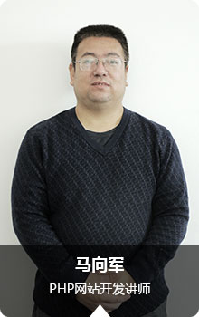

实力雄厚的师资团队
作为学生未来之路的引路者我们是认真的
-
色彩搭配设计师，中国流行色协会会员，现任职中关村学院 景秀校企合作 课程总监 副院长，曾任职北京中旭建筑设计 有限责任公司，艾迪尔建筑装饰工程有限公司，实创装饰工 程有限公司研发中心经理
项目作品： 上海龙美术馆 首都机场T1海关楼 奔驰汽车北江森工业园 北京国门商务区改造项目 中信书店店面设计（北京T3航站楼、杭州萧山机场） 广州玛雅社影楼色彩搭配设计师，中国流行色协会会员，现任职中关村学院 景秀校企合作 课程总监 副院长，曾任职北京中旭建筑设计 有限责任公司，艾迪尔建筑装饰工程有限公司，实创装饰工 程有限公司研发中心经理
项目作品： 上海龙美术馆 首都机场T1海关楼 奔驰汽车北江森工业园 北京国门商务区改造项目 中信书店店面设计（北京T3航站楼、杭州萧山机场） 广州玛雅社影楼 -

环信大数据总监/首席科学家2000年——2010年：作为主创工程师，在全球性金融安全企业Norkom公司成功主持设计研发公司核心产品-金融安全领域的大数据处理系统。此产品异常成功，大客户上百家，遍及世界各地，都是大型金融机构，其中包括WestUnion，Experian，Amex，Fortis，HSBC等。2010年——2015年：任职英国BAE系统公司的应用智能部金融安全领域的首席工程师兼金融安全领域专家。
环信大数据总监/首席科学家2000年——2010年：作为主创工程师，在全球性金融安全企业Norkom公司成功主持设计研发公司核心产品-金融安全领域的大数据处理系统。此产品异常成功，大客户上百家，遍及世界各地，都是大型金融机构，其中包括WestUnion，Experian，Amex，Fortis，HSBC等。2010年——2015年：任职英国BAE系统公司的应用智能部金融安全领域的首席工程师兼金融安全领域专家。
-

景秀教育教学部主任。毕业于北京服装学院，12年相关工作经验。曾任职北京经典广告有限公司设计师，德芙巧克力马氏集团包装策划，北京化工大学北方学院（燕郊校区）平面设计教研室主任
项目作品： 邯郸磁县电视台设计标志vi系统 青海省博物馆设计标志及vi系统 香港丰梅服装有限公司vi系统设计 眉州东坡圣诞活动策划与设计 北京工业大学培训学院vi系统策划景秀教育教学部主任。毕业于北京服装学院，12年相关工作经验。曾任职北京经典广告有限公司设计师，德芙巧克力马氏集团包装策划，北京化工大学北方学院（燕郊校区）平面设计教研室主任
项目作品： 邯郸磁县电视台设计标志vi系统 青海省博物馆设计标志及vi系统 香港丰梅服装有限公司vi系统设计 眉州东坡圣诞活动策划与设计 北京工业大学培训学院vi系统策划 -

美国大数据工作10年以上经验，北京某著 名软件公司大数据项目部负责人。
美国大数据工作10年以上经验，北京某著 名软件公司大数据项目部负责人。
-

高级三维动画师，高级游戏动作师，高级三维讲师。曾任中国传媒大学凤凰学院，培训学院，北广在线专职三维动画讲师 /教学总监；4DU工作室主创；北京博艺螺旋三维动画总监；北京艺沃东方科技有限公司三维讲师；G.E数字视频工作室三维动画总监；哈尔滨创奇动漫基地教学总监；北京新东方酷学网签约高级三维讲师；
项目作品： 《一骑当千》《大唐无双》《Fly》《神兵玄奇》《帽儿山的鬼子兵》《大唐龙将》高级三维动画师，高级游戏动作师，高级三维讲师。曾任中国传媒大学凤凰学院，培训学院，北广在线专职三维动画讲师 /教学总监；4DU工作室主创；北京博艺螺旋三维动画总监；北京艺沃东方科技有限公司三维讲师；G.E数字视频工作室三维动画总监；哈尔滨创奇动漫基地教学总监；北京新东方酷学网签约高级三维讲师；
项目作品： 《一骑当千》《大唐无双》《Fly》《神兵玄奇》《帽儿山的鬼子兵》《大唐龙将》 -

北京工业大学电子商务专业毕业, 网站开发15年从业经验,熟悉互联网技术规范及网站架构标准、精通H5响应式网站开发，在移动互联网开发方面积累了大量宝贵经验，曾任清华万博网络运营部技术总监、北京华美冠日化网站技术支持、北京神黄科技前端开发部经理
项目作品： 河北“天堂草原”旅游网 一汽大众北京售后服务中心网站 清华万博网络公司网站 一品视觉数字艺术设计基地网站 工大世通留学服务咨询网站 神黄中医智库北京工业大学电子商务专业毕业, 网站开发15年从业经验,熟悉互联网技术规范及网站架构标准、精通H5响应式网站开发，在移动互联网开发方面积累了大量宝贵经验，曾任清华万博网络运营部技术总监、北京华美冠日化网站技术支持、北京神黄科技前端开发部经理
项目作品： 河北“天堂草原”旅游网 一汽大众北京售后服务中心网站 清华万博网络公司网站 一品视觉数字艺术设计基地网站 工大世通留学服务咨询网站 神黄中医智库 -

博彦科技软件开发工程师；北京应用技术大学软件和游戏开发工程师；北大青鸟，北京财经专修学院，北京科技职业学院任职Java方向高级讲师；三星集团中国分公司教学总监和Android高级讲师；
博彦科技软件开发工程师；北京应用技术大学软件和游戏开发工程师；北大青鸟，北京财经专修学院，北京科技职业学院任职Java方向高级讲师；三星集团中国分公司教学总监和Android高级讲师；
-

中关村学院软件专业php讲师,毕业于天津财经学院计算机系，有多年的软件,网络编程经验，国家OSTA软件考试三级程序员曾在北大青鸟等北京知名IT培训学校担任php专业教学负责人，教研组长，高级讲师等多种职务，培养出多名学生实现高薪就业。
项目作品： www.cinep.net 前后台设计 www.jdyp1688.com 前后台设计 www.kuaiji.org.cn 前后台设计 北京理工大学校园网站设计， 及多种后台管理系统的设计开发。中关村学院软件专业php讲师,毕业于天津财经学院计算机系，有多年的软件,网络编程经验，国家OSTA软件考试三级程序员曾在北大青鸟等北京知名IT培训学校担任php专业教学负责人，教研组长，高级讲师等多种职务，培养出多名学生实现高薪就业。
项目作品： www.cinep.net 前后台设计 www.jdyp1688.com 前后台设计 www.kuaiji.org.cn 前后台设计 北京理工大学校园网站设计， 及多种后台管理系统的设计开发。 -

十一年行业工作经验，曾任职于北京华特建筑设计有限公司；北京艾迪尔建筑装饰有限公司；2010—2015成立个人设计工作室。
项目作品： 唐山海奥酒店（三星级） 北京玛雅酒店（五星级） 沿海赛洛城售楼处及样板间 燕西台别墅售楼处及样板间 首创葫芦岛售楼处及样板间 天津瞰海项目售楼处及样板间 中信银行连锁书店 龙湖，香提别墅十一年行业工作经验，曾任职于北京华特建筑设计有限公司；北京艾迪尔建筑装饰有限公司；2010—2015成立个人设计工作室。
项目作品： 唐山海奥酒店（三星级） 北京玛雅酒店（五星级） 沿海赛洛城售楼处及样板间 燕西台别墅售楼处及样板间 首创葫芦岛售楼处及样板间 天津瞰海项目售楼处及样板间 中信银行连锁书店 龙湖，香提别墅 -

七年设计相关工作，曾就职于超星集团，有丰富的电商设计、WebUI、移动端UI、软件UI的工作经验，注重交互设计和用户体验。实战式教学，一切教学从工作出发，让学员与企业之间完美结合。
项目作品： 《云舟-域空间知识服务系统》《超星学习通APP》《大雅相似度论文检测系统》《浙江网络图书馆》《山东大学图书馆》《河北省社会科学院数据信息网络平台》《上海青年学学科服务平台》七年设计相关工作，曾就职于超星集团，有丰富的电商设计、WebUI、移动端UI、软件UI的工作经验，注重交互设计和用户体验。实战式教学，一切教学从工作出发，让学员与企业之间完美结合。
项目作品： 《云舟-域空间知识服务系统》《超星学习通APP》《大雅相似度论文检测系统》《浙江网络图书馆》《山东大学图书馆》《河北省社会科学院数据信息网络平台》《上海青年学学科服务平台》 -

恒大动画高级特效师;腾讯游戏签约合作cg特效师；2013-2015任职于中国传媒大学培训学院，凤凰学院，完美动力特效讲师；世纪互联远程教育网课程总监，教学督导；上海直尚网络直线教程网特约高级特效讲师；G.E数字视频工作室主创;4DU工作室主创
项目作品： 《巴黎宝贝》《大闹天宫》《神探狄仁杰II》 《qq飞车2.0》等恒大动画高级特效师;腾讯游戏签约合作cg特效师；2013-2015任职于中国传媒大学培训学院，凤凰学院，完美动力特效讲师；世纪互联远程教育网课程总监，教学督导；上海直尚网络直线教程网特约高级特效讲师；G.E数字视频工作室主创;4DU工作室主创
项目作品： 《巴黎宝贝》《大闹天宫》《神探狄仁杰II》 《qq飞车2.0》等 -

从事室内效果图、建筑表现工作五年，熟悉设计流程，对施工工艺有一定了解，工作期间曾配合多位建筑设计师、室内设计师进行效果图表现工作，有较好的团队配合能力及沟通能力；熟练运用多种制图软件（MAX PS CAD SU）
项目作品： 北京碧水庄园（2000平）、北京君山别墅（1500平）、龙湾别墅（1800平）、上海餐厅、京兆尹餐厅 等从事室内效果图、建筑表现工作五年，熟悉设计流程，对施工工艺有一定了解，工作期间曾配合多位建筑设计师、室内设计师进行效果图表现工作，有较好的团队配合能力及沟通能力；熟练运用多种制图软件（MAX PS CAD SU）
项目作品： 北京碧水庄园（2000平）、北京君山别墅（1500平）、龙湾别墅（1800平）、上海餐厅、京兆尹餐厅 等